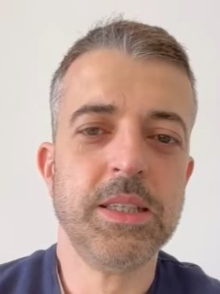
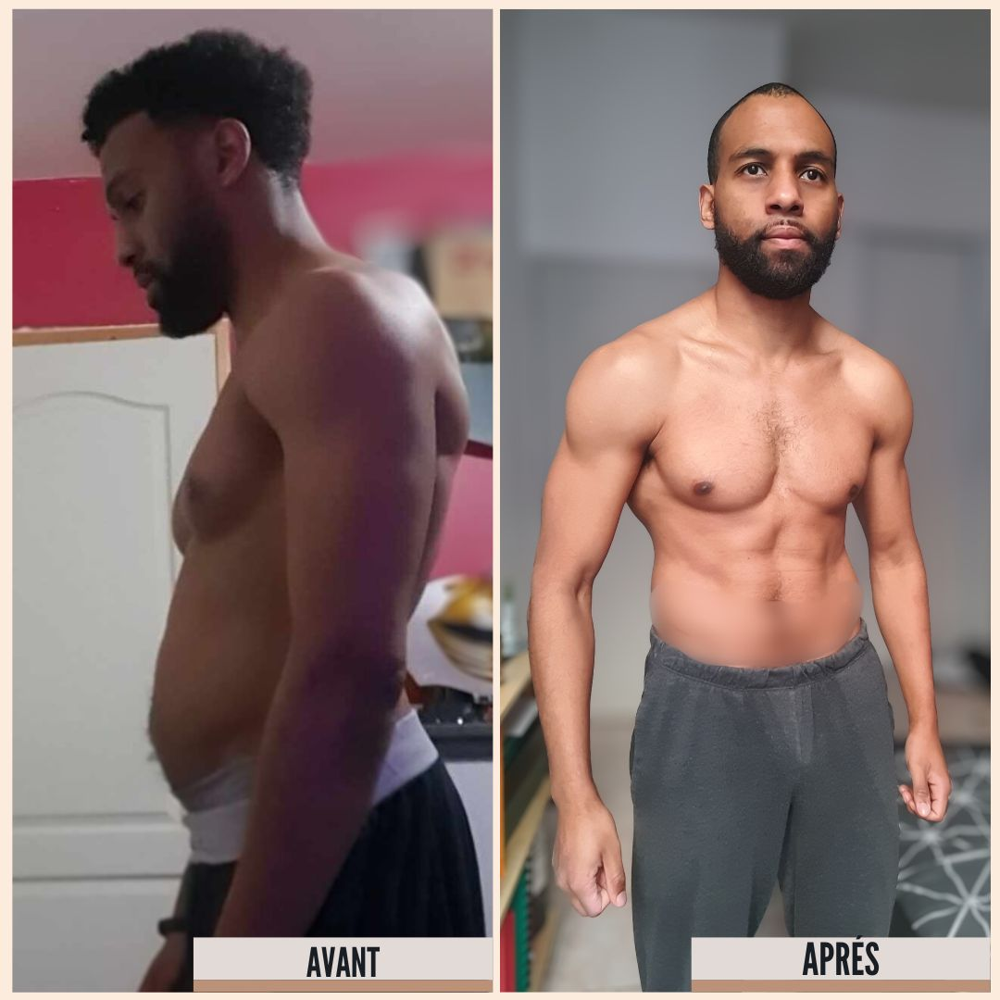
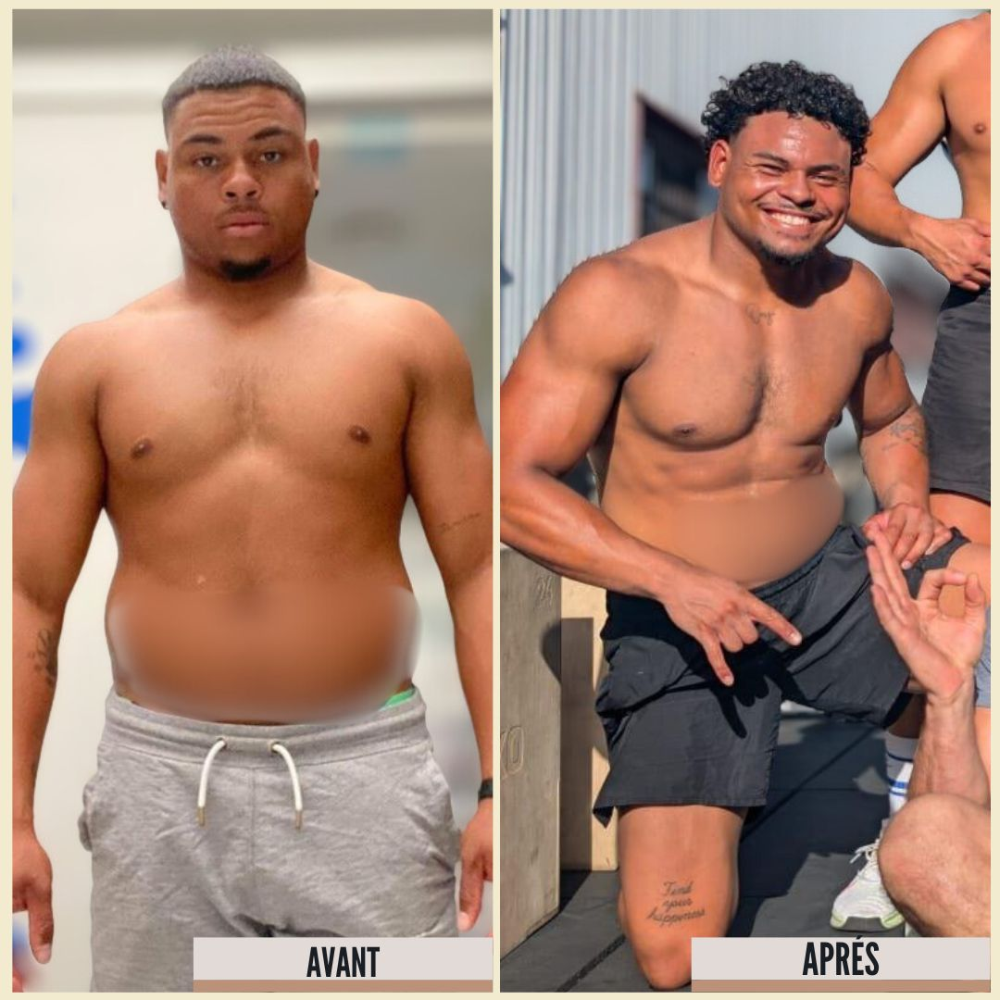
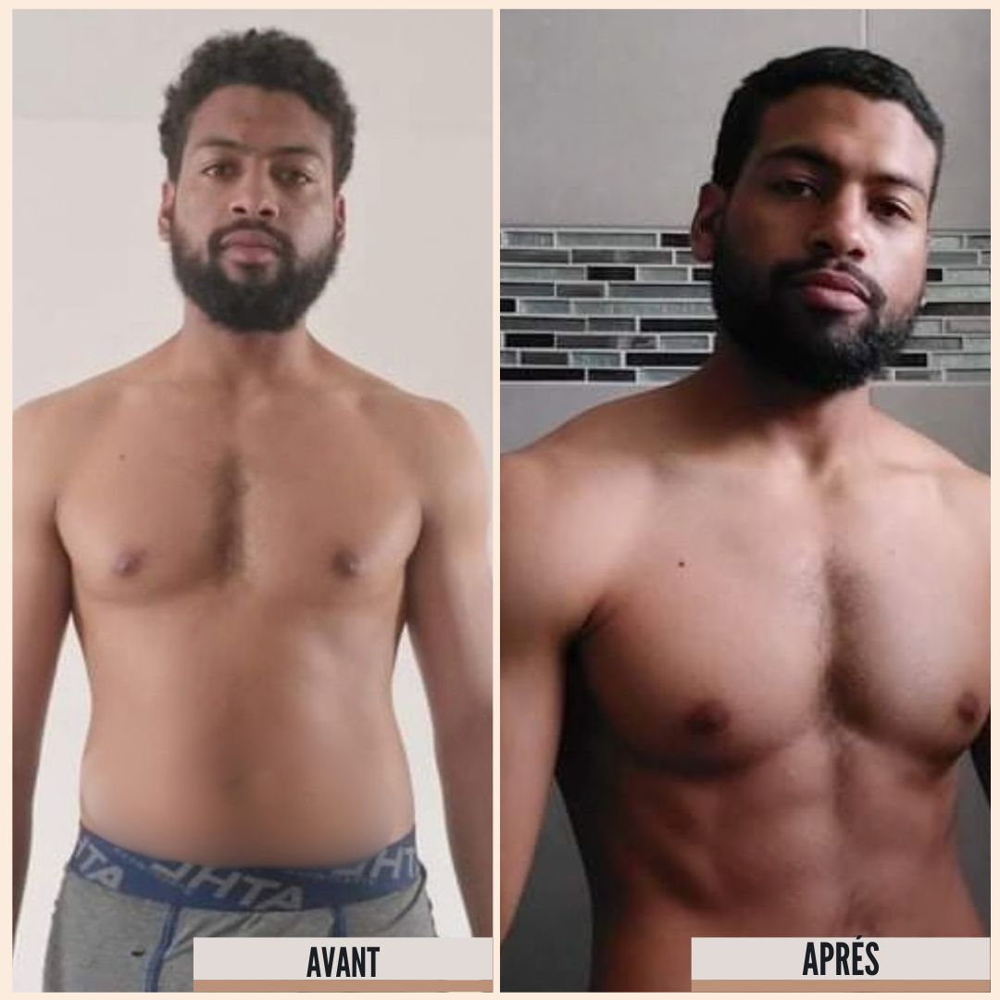
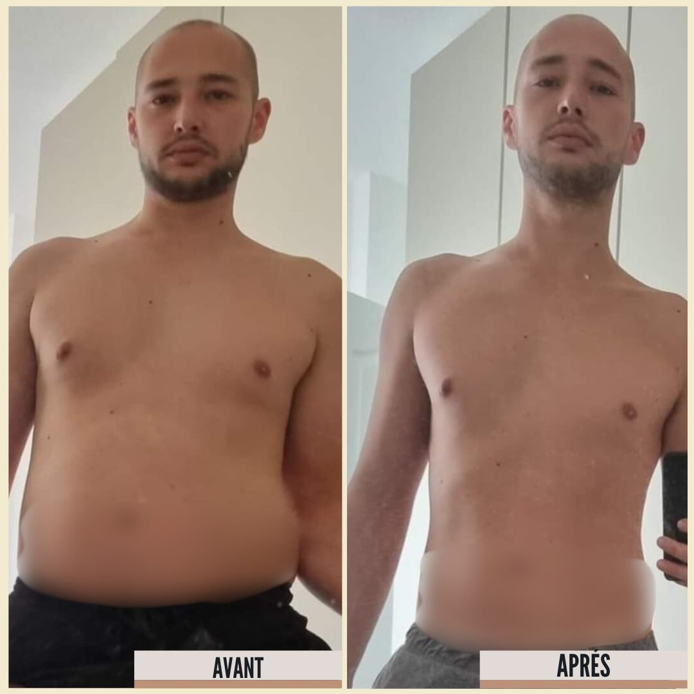
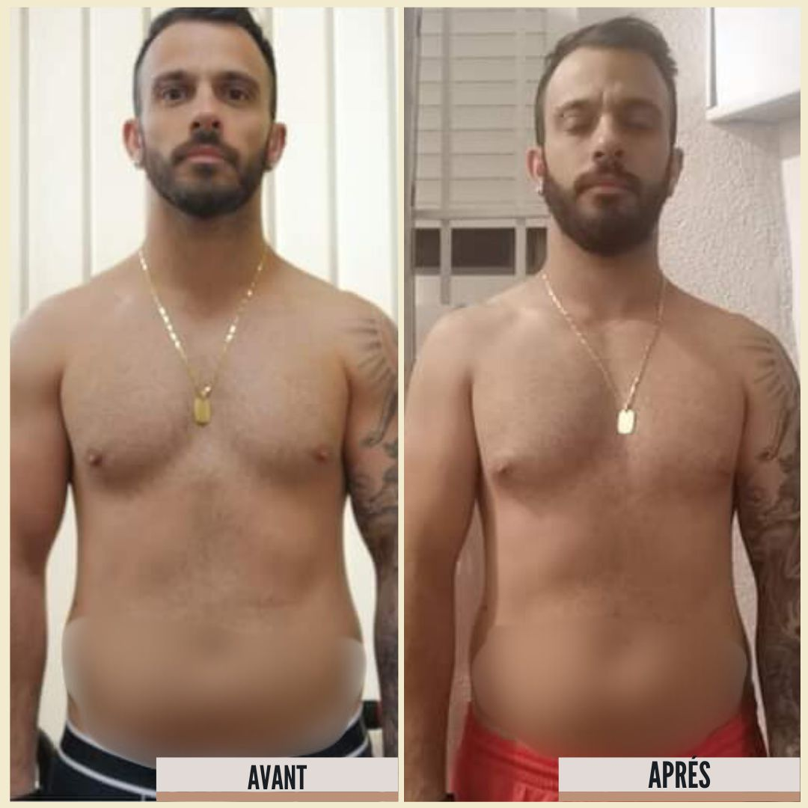
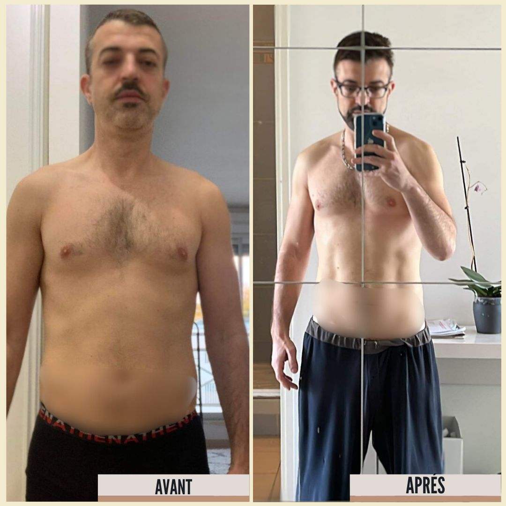

Tu te reconnais là-dedans ?
- → Avant, tu faisais du sport, puis la vie de famille et le travail ont tout effacé progressivement.
- → Tu décroches à chaque fois que la fatigue s'installe. Tu reprends. Tu redécroches. Le yoyo permanent.
- → Tes horaires tardives et tes journées chargées t'empêchent de tenir tes prières, et ça te pèse.
- → Tu sais que tu dois te reprendre en main. Tu veux juste quelqu'un qui te comprend et te montre le chemin pour équilibrer ta santé, ta vie de famille, ton travail et ta religion, sans prise de tête.
« Ton corps a un droit sur toi. »
Parole du Prophète ﷺ, rapportée par ʿAbdullāh ibn ʿAmr ibn al-ʿÂs (qu'Allah l'agrée)
Sahih al-Bukhârî n° 1975 · Sahih Muslim n° 1159
Reprends le contrôle de ta santé en remettant Allah au centre.
Rijal Fit, ce n'est pas un programme fitness, c'est un accompagnement qui commence par ton pourquoi avant ton programme. Pas de recette générique. On trouve la vraie racine de ton blocage, et on relie chaque effort à ton identité d'homme musulman.
Bilan santé
Avant tout programme, on identifie pourquoi tu abandonnes. Pas la flemme. La vraie racine.
Le Programme Ancré
Chaque séance, chaque repas, chaque choix est relié à ce qui compte vraiment pour toi. L'effort devient une expression de qui tu es.
L'Autonomie
À la fin, tu comprends ton mécanisme. Si tu redécroches un jour, tu sais comment te reprendre, seul.
Pourquoi Rijal Fit
et pas un autre coach ?
Les autres coachs
- Te donnent un programme
- Comptent les calories
- S'adressent à ta raison
- Vendent une transformation physique
Rijal Fit
- Commence par ton pourquoi
- Trouve la racine de ton blocage
- Relie chaque effort à ta foi
- Te remet en mouvement : corps et foi ensemble pour tenir sur la durée
Des hommes comme toi, qui s'y sont remis

NunoTémoignage vidéo▶ Voir son témoignage CCédricTémoignage vidéo▶ Voir son témoignage YYanisTémoignage vidéo▶ Voir son témoignage NNaderTémoignage vidéo▶ Voir son témoignage MMichaëlTémoignage vidéo▶ Voir son témoignage MMorganTémoignage vidéo▶ Voir son témoignage JJasonTémoignage vidéo▶ Voir son témoignage YYohannTémoignage vidéo▶ Voir son témoignage BBastienTémoignage vidéo▶ Voir son témoignage LLoïcTémoignage vidéo▶ Voir son témoignage AAdemTémoignage vidéo▶ Voir son témoignage YYoanTémoignage vidéo▶ Voir son témoignage WWarouTémoignage vidéo▶ Voir son témoignage GGhislainTémoignage vidéo▶ Voir son témoignage DDonavanTémoignage vidéo▶ Voir son témoignage DDanielTémoignage vidéo▶ Voir son témoignage NNunoTémoignage vidéo▶ Voir son témoignage CCédricTémoignage vidéo▶ Voir son témoignage YYanisTémoignage vidéo▶ Voir son témoignage NNaderTémoignage vidéo▶ Voir son témoignage MMichaëlTémoignage vidéo▶ Voir son témoignage MMorganTémoignage vidéo▶ Voir son témoignage JJasonTémoignage vidéo▶ Voir son témoignage YYohannTémoignage vidéo▶ Voir son témoignage BBastienTémoignage vidéo▶ Voir son témoignage LLoïcTémoignage vidéo▶ Voir son témoignage AAdemTémoignage vidéo▶ Voir son témoignage YYoanTémoignage vidéo▶ Voir son témoignage WWarouTémoignage vidéo▶ Voir son témoignage GGhislainTémoignage vidéo▶ Voir son témoignage





Chaque parcours est différent : ces photos ne promettent aucun résultat. Elles montrent ce que la régularité change avec le temps.
Quelques témoignages
Jason
Mehdi
Habib
Ces témoignages ont été enregistrés sous mon ancienne marque, Muslim Serinity Forme, devenue Rijal Fit.
Pourquoi je comprends ce que tu vis
J'ai été le petit gros de la classe. Je l'ai mal vécu : honte, repli, évitement. Je m'en suis sorti par le sport, puis j'ai eu un grave accident de dos sur un terrain de rugby.
Dans l'ambulance, j'ai invoqué Allah pour ne pas devenir paraplégique. Ce jour-là j'ai compris : la performance physique sans ancrage spirituel ne tient pas. Le corps n'est pas un trophée. C'est une amānah.
J'ai fait des études en sciences du sport pour savoir comment me reprendre en main. Après l'obtention de mon diplôme universitaire (STAPS), j'ai éduqué et coaché des jeunes au sport santé et à la nutrition. Et j'ai réalisé que pour changer les enfants, il faut d'abord changer les pères.
Rijal Fit existe pour ça. Ton corps a un droit sur toi, et c'est en le respectant que tu deviens un mou'min qawī.
Prêt à te reprendre en main ?
Un appel de 30 min. On fait le point sur ta situation. Sans pression.
Gratuit · 30 min · Sans engagement